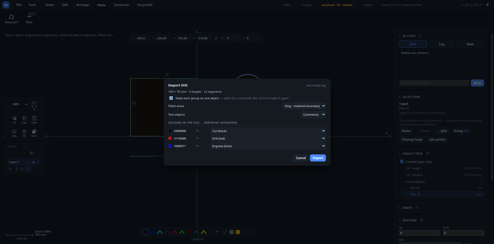

Import file vektor
Buka melalui File ▸ Import… (Ctrl+I). Dialog impor menampilkan ukuran dalam milimeter, jumlah objek/segmen/grup, dan setiap warna beroperasi KaryaCNC yang akan dipakai.

1. SVG
Membaca path, polyline, polygon, garis, kotak, lingkaran, elips, grup bersarang, transformasi, style inline, kelas <style>, simbol <use>, dan clipping path (dipotong betulan dengan Clipper). Teks dan embedded bitmap dilaporkan sebagai dilewati, tidak diimpor diam-diam.
2. PDF
Gambar vektor diimpor sebagai path dengan ukuran cetak asli (1 pt = 1/72 inci, dikonversi ke mm) dengan warna dipertahankan. Bitmap yang tertanam (image XObject, termasuk transparansi) masuk sebagai gambar acuan di posisi aslinya — double-click untuk trace. Teks di dalam PDF dilewati kecuali diekspor sebagai outline.
3. CDR (CorelDRAW)
CorelDRAW X4 dan lebih baru mengimpor bentuk vektor dengan ukuran asli beserta warna — garis, kotak, lingkaran, dan elips masuk sebagai objek native. Dialog menanyakan perlakuan teks (komentar, objek teks, atau dilewati) dan apakah warna asli dipertahankan.
4. DXF (ASCII)
DXF ASCII dari sebagian besar program CAD diimpor sebagai garis, lingkaran, busur, dan kurva native dengan ukuran asli. Tampilan langsung di-zoom pas. DXF biner tidak didukung — simpan ulang sebagai ASCII DXF.
5. Pengaturan dialog impor
| Pengaturan | Keterangan |
|---|---|
| Keep each group as one object | Default nyala. Setiap <g> menjadi satu objek berframe (cocok untuk file customer). Matikan dan bentuk masuk sebagai garis/kurva yang bisa diedit, tetap terpilih sebagai grup; Ctrl+U melepasnya. |
| Filled areas | Gray = batas material; Yellow = balik arah offset; Ignore = abaikan fill. |
| Text objects | Comments, text objects, atau Skip. |
| Join endpoints (weld) | Gabungkan ujung segmen warna sama menjadi satu titik sehingga kontur tiba terhubung dan loop tertutup. |
| Join distance (mm) | Jarak maksimum ujung segmen untuk di-weld. Jaga di bawah setengah segmen terpendek dalam file. |